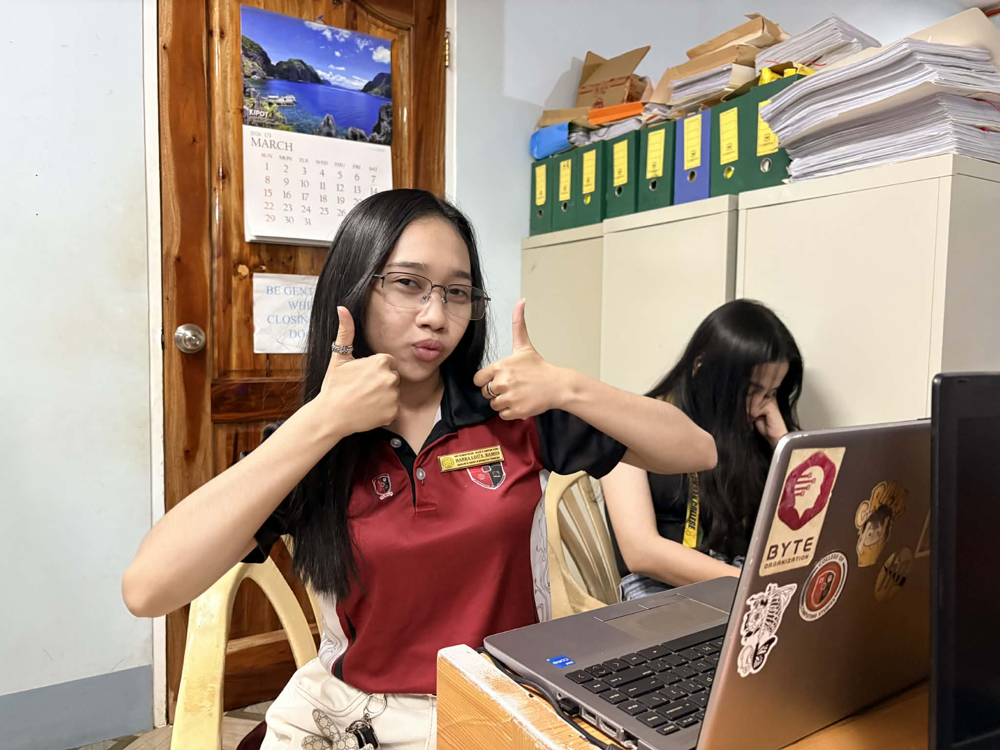
March 30–31, 2026
Back to Office, Back to Improvements
After the tour break, I returned to work on improving the system UI during a quiet office schedule.
Read More →Stories, lessons, and moments from my on-the-job training journey — documented week by week.

After the tour break, I returned to work on improving the system UI during a quiet office schedule.
Read More →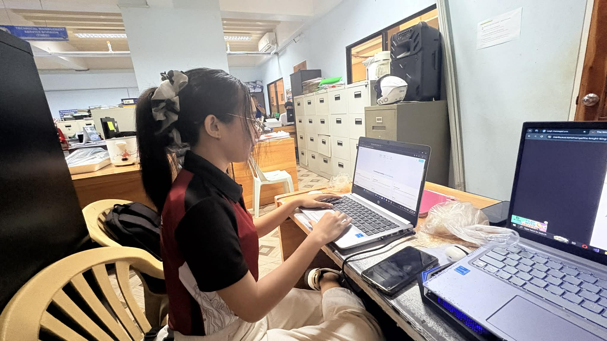
Participated in an external meeting, handled assistance tasks, and helped verify scholars’ records while continuing technical improvements.
Read More →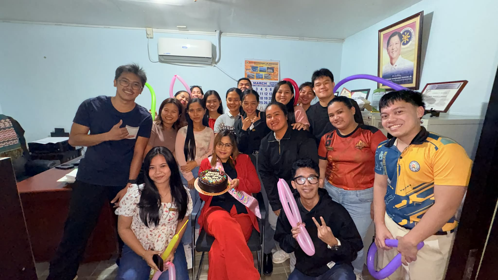
Focused on document preparation, file organization, and continued development of the Job Portal and OJT DTR system during free time.
Read More →Despite light workloads, I stayed consistent in reporting to the office, assisted with document preparation, and handled physical and errand tasks responsibly.
Read More →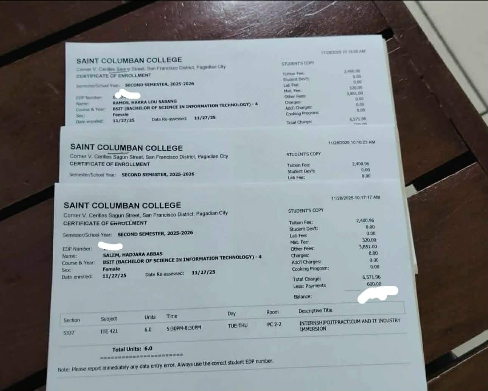
The second semester started with a whirlwind of capstone revisions, consultations, and nonstop document checking. But despite the pressure, our team Diskar-Tech finally made it — we officially enrolled on November 28.
Read More →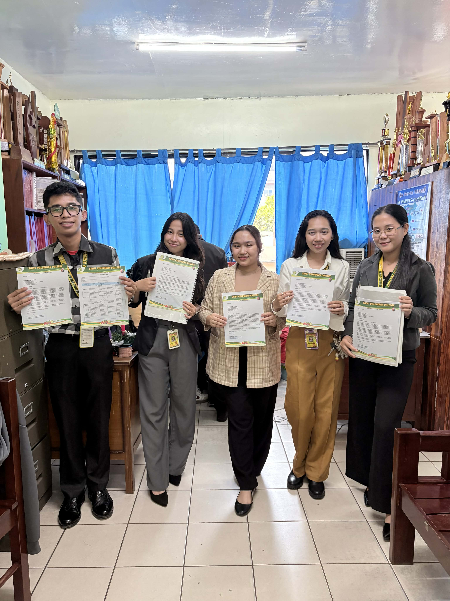
From chasing endorsement papers to attending interviews and a workplace etiquette workshop, Week 2 was packed with preparations, learnings, and new experiences.
Read More →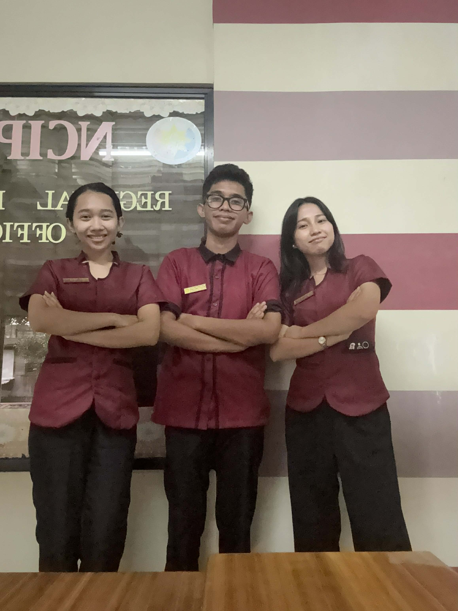
Our first week at NCIP XI was all about learning the environment, understanding our tasks, and starting the design of the Job Application System assigned to us.
Read More →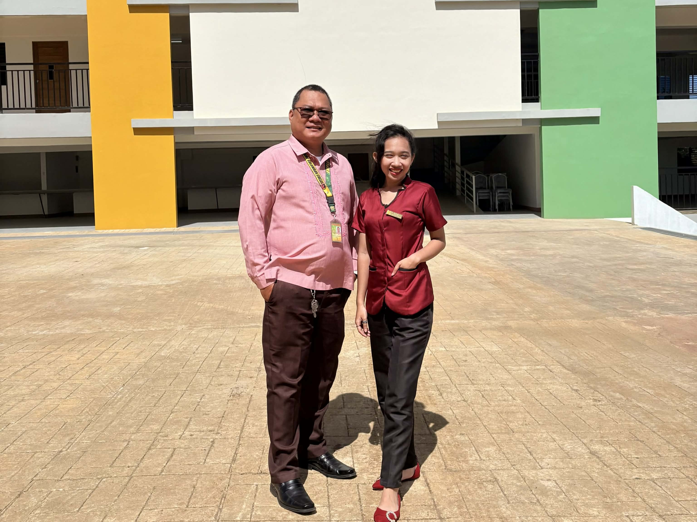
From capturing meaningful moments during our OJT pictorials to gradually returning to work after recovery, this week was about showing up, staying consistent, and appreciating the progress made through steady effort—both personally and professionally.
Read More →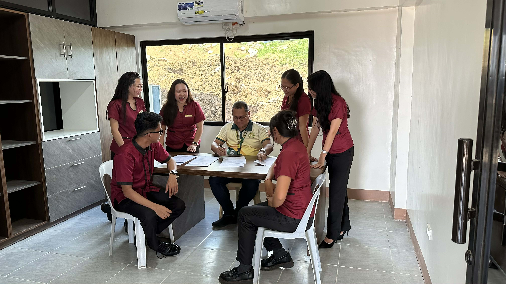
After a long holiday break, this week marked our return to productivity—refining system designs, testing workflows with HR, completing administrative tasks, and reconnecting with mentors through the MOA signing. A productive restart filled with growth and renewed motivation.
Read More →During this period, I focused on the continuous development of the NCIP Job Portal through coding and system review. Despite limited assigned tasks, the week was productive and helped improve my technical skills and work consistency.
Read More →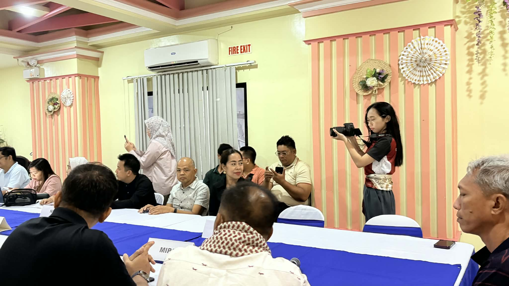
During this period, I continued working on the NCIP Job Portal, assisted in office preparation for an official event, participated as a photographer during the turnover ceremony, and attended the Graduating Student General Assembly. The week highlighted adaptability, teamwork, and responsibility in handling various tasks.
Read More →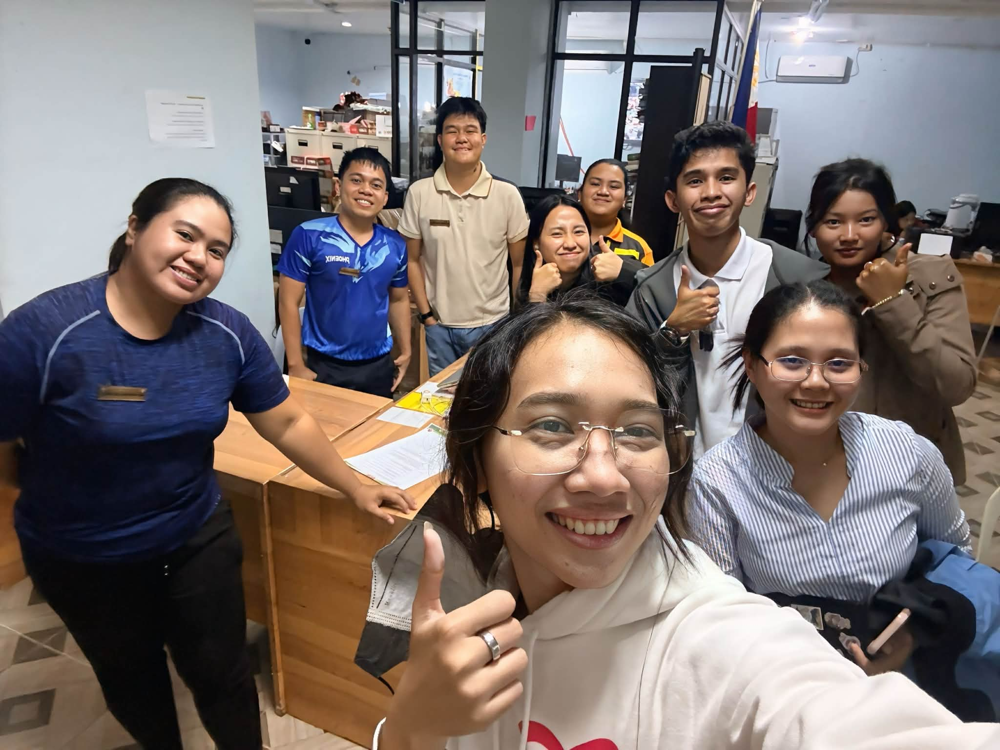
This week focused on continuing system development while assisting in office preparations for an upcoming program. Tasks included coding, scanning documents, and physically arranging the office setup. The week required both technical focus and teamwork, especially during the rearrangement of office furniture and workspace organization.
Read More →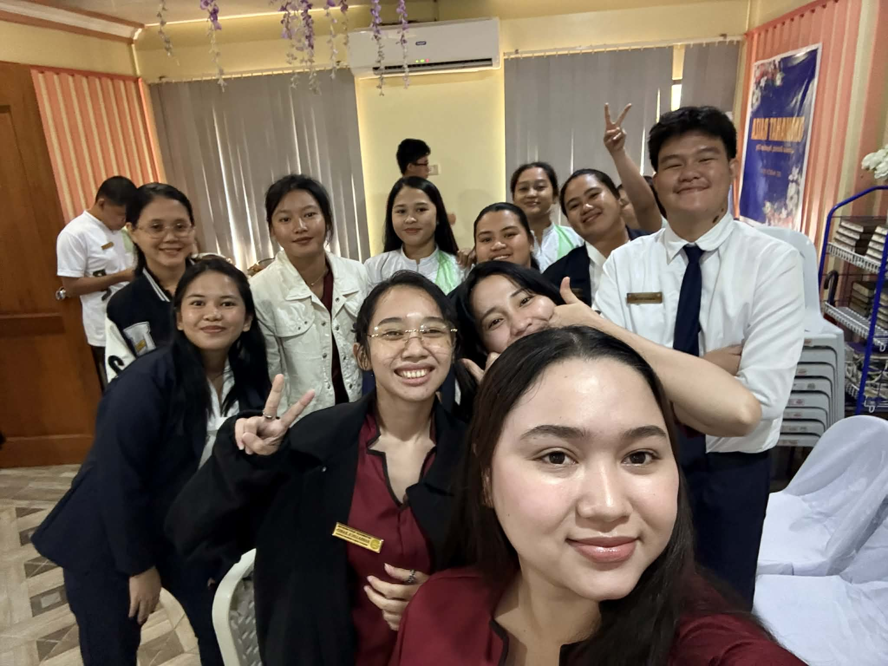
This week involved participation in an official turn-over ceremony and various office support tasks. In addition to event assistance, I was assigned creative and administrative responsibilities including business card design and document delivery. The week balanced formal event exposure and design-related tasks.
Read More →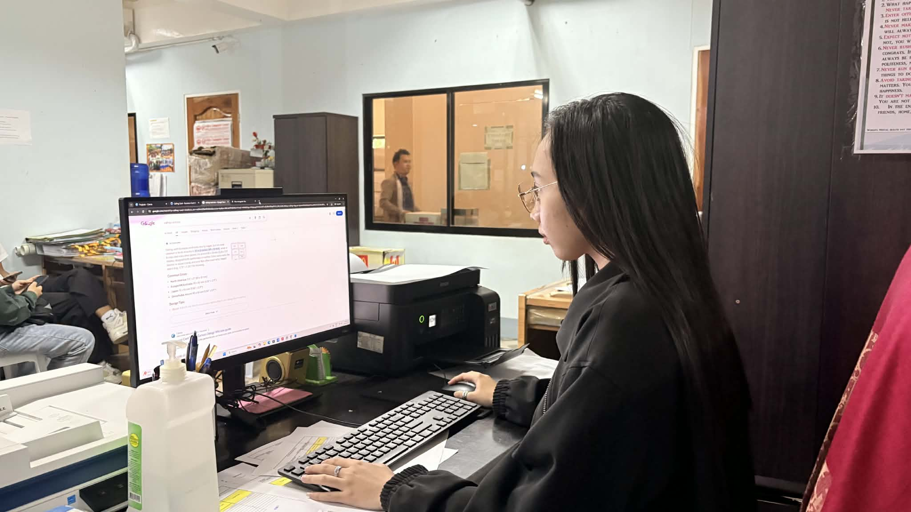
This week focused mainly on continuous system development and minor administrative assistance. Tasks included printing prototypes, coding improvements, document handling, and office rearrangement. It was a steady and balanced week between technical and support responsibilities.
Read More →
This week was focused on system debugging and steady development progress. Although office tasks were limited, I maintained productivity by reviewing, fixing, and improving the Job Portal System while managing responsibilities despite minor health challenges.
Read More →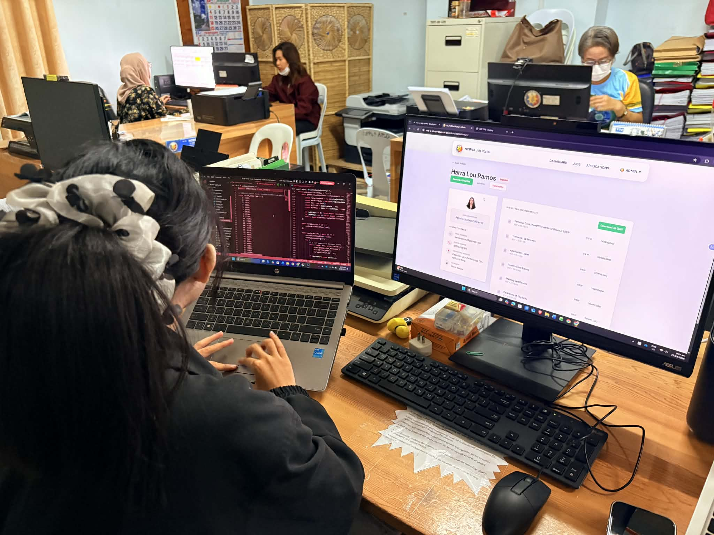
This week involved a mix of technical development and physically demanding office responsibilities. During lighter office days, I maximized my time by building an OJT DTR system to simplify daily time recording and reporting. Aside from development work, I also assisted in printing materials and participated in major office cleaning and reorganization tasks, which required teamwork and physical effort. The week reflected both initiative in technical improvement and flexibility in handling non-technical responsibilities.
Read More →